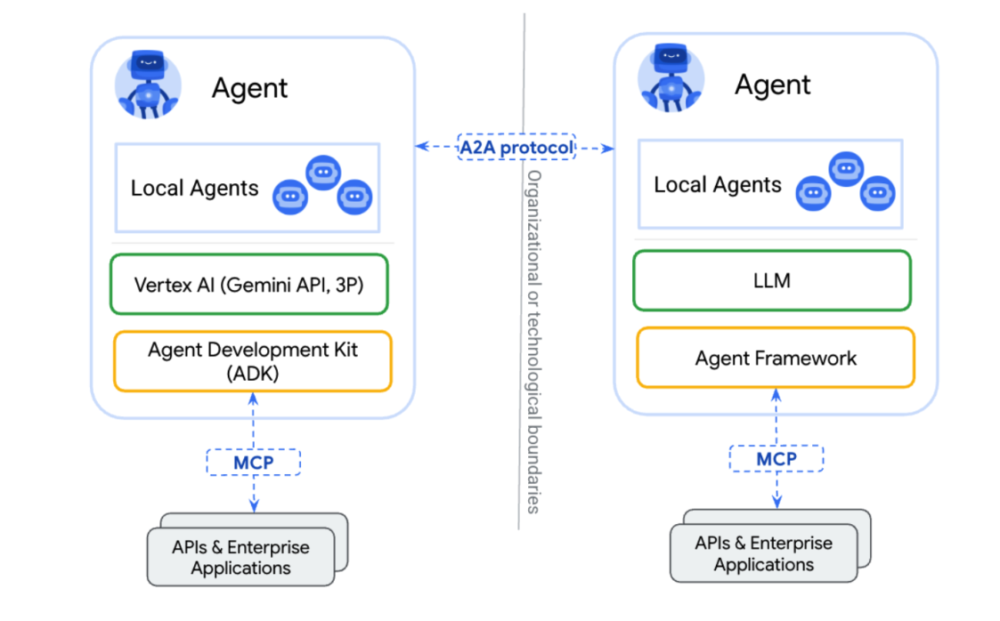
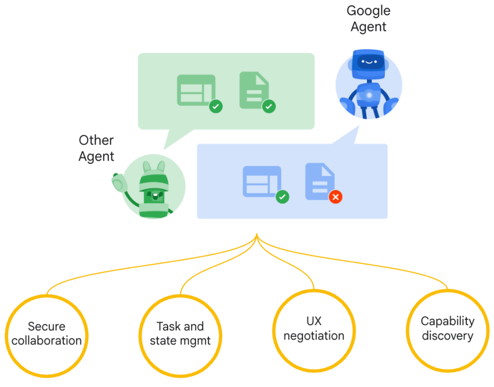
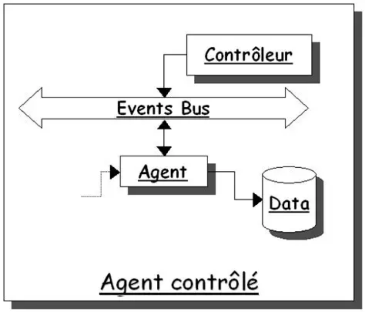
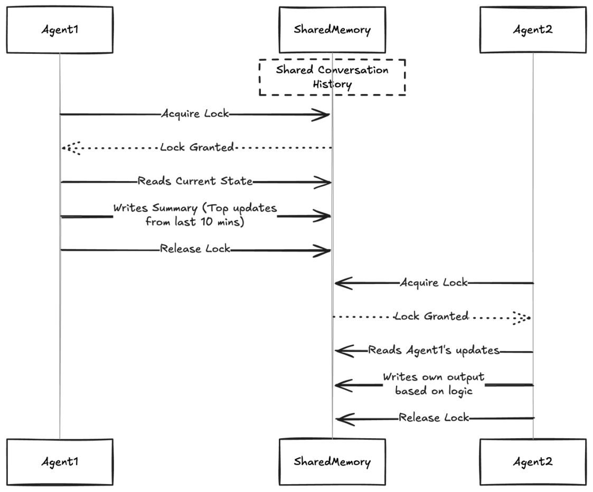
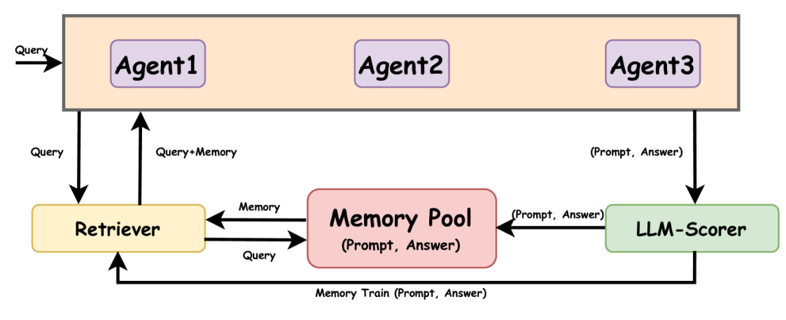

Agent 通信
在 Multi-Agent 系统中，多个 Agent 之间必须能够交换信息，否则系统无法形成真正的协作关系。因 此，Agent 通信机制是 Multi-Agent 架构中的核心组成部分。一个成熟的 Multi-Agent 系统不仅需要定 义 Agent 的职责，还需要设计清晰的通信方式，使得不同 Agent 能够共享信息、协调任务以及同步执 行状态。
从工程实践角度来看，Agent 通信主要解决三个问题： 第一是 信息传递，即 Agent 如何向其他 Agent 发送消息； 第二是 状态共享，即多个 Agent 如何访问同一份任务数据； 第三是 任务协调，即 Agent 如何在复杂流程中保持协作一致性。
目前常见的 Agent 通信方式主要包括三种：Agent-to-Agent 通信（A2A）、基于消息总线的通信 （Message Bus），以及基于共享状态的通信（Shared Memory）。不同通信方式适用于不同规模和 复杂度的系统。
A2A（Agent-to-Agent）
A2A 是最直接的一种通信方式，即一个 Agent 直接调用另一个 Agent。 在这种模式中，每个 Agent 都可以被看作一个独立服务，当某个 Agent 需要其他能力时，会向对应 Agent 发送请求并等待返回结果。

例如，在一个 Multi-Agent 编程系统中，Planner Agent 可能会调用 Code Agent 生成代码，然后再调 用 Test Agent 进行测试。这种调用方式类似于传统微服务之间的 API 调用。 A2A 通信的优势在于实现简单、结构清晰，非常适合规模较小的 Multi-Agent 系统。开发者可以通过 REST API、gRPC 或者内部函数调用实现 Agent 之间的通信。

不过，当系统规模增大时，A2A 模式可能会变得复杂。因为 Agent 之间需要互相知道对方的地址和接 口，一旦 Agent 数量增加，系统依赖关系会迅速增长，从而增加系统维护成本。 因此，A2A 通信更适用于结构较简单的 Multi-Agent 架构，例如层级式 Agent 系统。
Message Bus
Message Bus 是一种更加解耦的通信方式。在这种模式中，Agent 不再直接调用彼此，而是通过一个 消息系统进行通信。Agent 只需要将消息发送到消息总线，其他 Agent 可以订阅相关消息并进行处 理。

这种通信方式类似于事件驱动架构。例如，当 Planner Agent 生成一个任务时，它会向消息总线发布 一个“Task Created”事件。Worker Agent 订阅这个事件后，可以自动接收任务并执行。 Message Bus 的优势在于系统解耦程度高。Agent 之间不需要直接依赖彼此，只需要关注自己订阅的 消息类型即可。这样不仅可以减少系统耦合，还可以支持更加灵活的任务分发机制。 在工程实践中，Message Bus 通常通过消息队列系统实现，例如 Kafka、RabbitMQ 或者 Redis Stream。通过这些系统，可以实现高并发、高可靠的 Agent 通信。 这种通信模式非常适合大型 Multi-Agent 系统，因为它能够支持多个 Agent 并行工作，并且具有良好 的扩展能力。
Shared Memory
Shared Memory 是另一种常见的 Agent 通信方式，其核心思想是多个 Agent 共享同一份状态数据。 Agent 不通过消息直接通信，而是通过读取和更新共享状态来协作。

在这种模式中，系统通常会维护一个共享存储，例如数据库、缓存系统或者向量数据库。每个 Agent 都可以访问这份共享数据，并根据当前状态决定下一步行动。
例如，在一个复杂任务执行系统中，Planner Agent 可以将任务状态写入共享存储，而 Worker Agent 通过读取任务状态获取需要执行的子任务。当任务完成后，Worker Agent 再更新任务状态，从而通知 系统进入下一阶段。

Shared Memory 的优势在于状态管理清晰，并且适合长流程任务。例如在复杂工作流系统中，任务状 态通常需要被多个 Agent 反复读取和更新，因此共享状态模型非常适合这种场景。 不过，这种方式也需要注意并发控制问题。例如多个 Agent 同时更新同一数据时，需要通过锁机制或 者事务机制保证数据一致性。
通信机制总结
在 Multi-Agent 系统中，通信机制决定了 Agent 之间如何协作。A2A 通信简单直接，适合小规模系 统；Message Bus 具有良好的解耦能力，适合大型分布式系统；Shared Memory 则适合需要共享状态 的复杂任务流程。
在实际系统设计中，开发者通常会结合多种通信方式。例如在层级式 Agent 架构中，上层 Agent 可能 通过 A2A 调用下层 Agent，而 Worker Agent 之间则通过消息队列进行任务协调，同时系统状态存储在 共享数据库中。
通过合理设计 Agent 通信机制，Multi-Agent 系统才能在复杂任务场景中保持高效协作，并具备良好的 扩展能力。